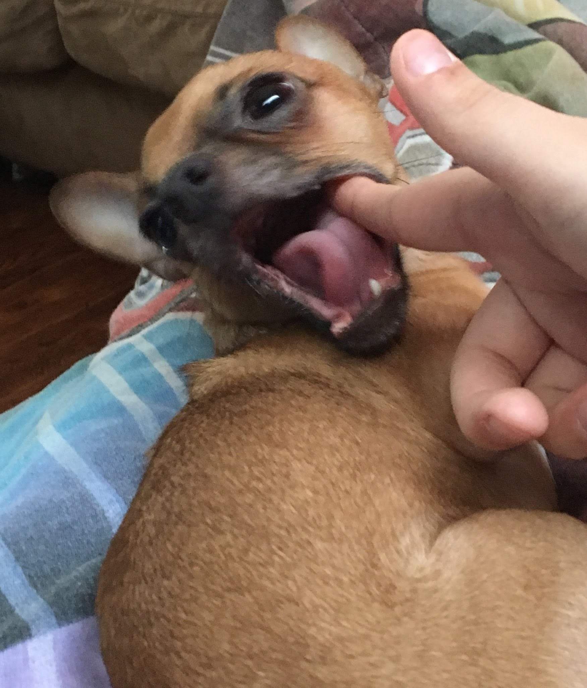
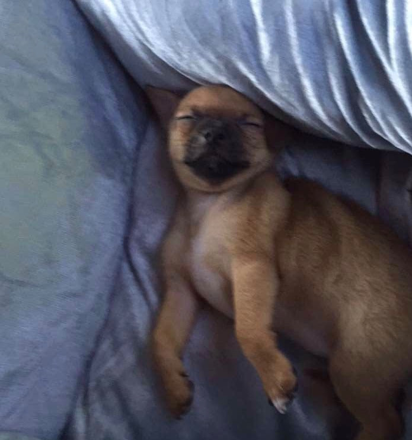
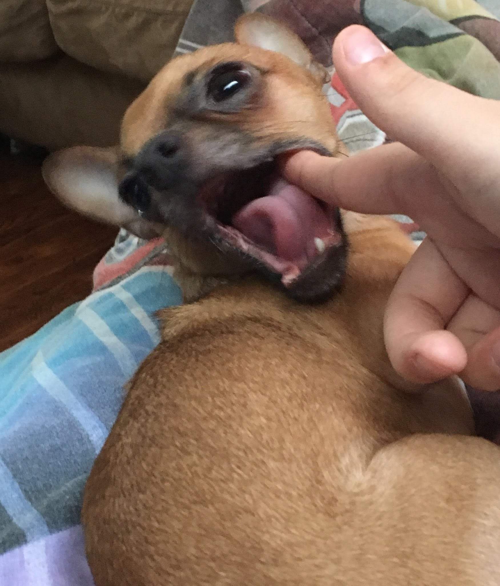
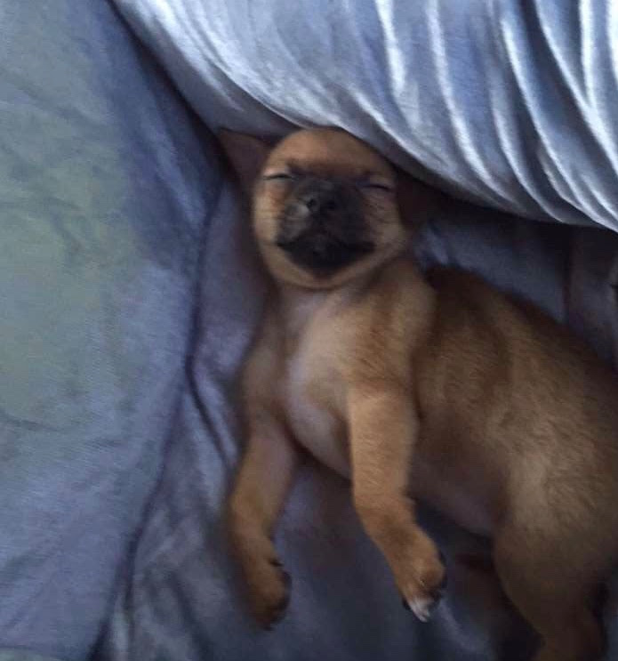

MiaoMiao

MiaoMiao is the best cat in the world, extremely social with other, and vigilant against strangers. Oftentimes you can find her running around the house looking for things to eat. If she consumed anything other than cat food, she immediately throws up.
She is chill and chirpy. Loves to play with anything other than professional cat toys. Also loves sitting on keyboards and joining Zoom calls.
Photo Gallery


Likes
- Birds
- Ping-pong Balls
- Sleeping
Yugi
Yugi is a 7 year old chihuahua who loves love and adores attention. A member of the sassy dog community, he is full of personality and character with a response for everything. Nicknamed King Yugi, he holds himself as a true royal and leader of the home, being given all the luxuries in life by his humans.
With the ability to love beyond his small body, Yugi is an attached lap dog that loves to be your sidekick. Protective, caring, and cuddly, there is never a time he isn’t there to support you and is always prepared for a short-notice nap time.
Photo Gallery

 



Likes
Bacon Q Dog

Bacon Q. Dog is a 9yr old labradoodle. He prefers to spend his days lounging among the three different beds/couches that his family has gifted him. He enjoys a walk or two around the neighborhood, as long as he can pretend that he doesn't see any of the other animals to avoid the embarrassment of not wanting to admit he has no wolf-like skills in chasing them.
At night just as the rest of the family is ready to relax, Bacon suddenly wants to release all of his energy. He will place his toys on a mini couch and frantically drag the couch around, giving his toys "a ride." There is also a lot of rolling. Lots and lots of rolling.
Photo Gallery


Likes
- Belly rubs
- Playing tug-of-war
- Sneaking onto the couch
Honey

Honeys favorite thing in the world is swimming. Even if it is the middle of January and half of the lake is frozen, Honey will be in the water. She is a smart swimmer, so when my brother and I go underwater, she will follow our air bubbles and be waiting for us when we come up for air.
While most dogs like to chase balls or sticks, Honey likes to chase rocks. She will even chase rocks into the water and stick her whole face in the water to try and find the rock thrown. Chasing rocks is her main form of exercise right now as she refuses to go on walks from our house. If we drive her to another spot and walk from there, Honey will go on a walk but she refuses to leave our driveway when we try to walk from home. Finally one other Honey-ism is that her safe place is bathtubs. Many times our family has woken up in the middle of the night and found Honey is a bathtub
Photo Gallery


Likes
- Likes rocks
- Likes food
- Likes attention
Jingle

Jingle is a domestic shorthair cat with a white chest and belly and a striped black and gray back. His paws are white and they look like mittens. Jingle loves going outside. He used to be an outdoor/indoor cat until we realized that he loved to get injured. Now, we take him on walks with a leash which he loves! Every time he sees me carrying the leash he goes crazy and meows to go out.
Jingle is very mischievous, he has gotten into many different accidents. His first accident was outside; a bee stung his paw and he cried all night long. The second one was ALSO outside, he got stuck on a tree for four days. Finally, he came back home one day with his tail bleeding and ripped out.
Photo Gallery


Likes
- Going on walks.
- Being pet.
- Eating treats.